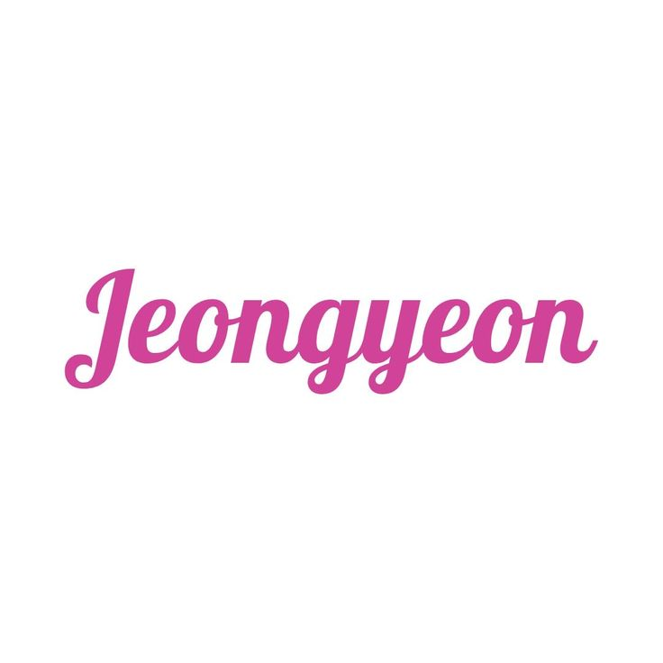

Yoo Jeong-yeon
Biodata
- Nama Lengkap: Yoo Jeong-yeon
- Tanggal Lahir: 1 November 1996
- Posisi: Lead Vocalist
- Golongan Darah: O
- Tinggi: 169 cm
- Hobi: Menonton film, memasak, merakit LEGO
Biografi & Perjalanan Karier
Yoo Jeong-yeon lahir pada 1 November 1996 di Suwon, Korea Selatan. Ia memiliki nama lahir Yoo Kyung-wan, namun mengubahnya secara hukum menjadi Jeong-yeon karena merasa lebih cocok. Jeongyeon dibesarkan dalam keluarga yang memiliki bakat seni — ayahnya adalah chef terkenal yang pernah bekerja untuk mantan presiden Korea Selatan.
Jeongyeon pertama kali mengikuti audisi JYP Entertainment pada tahun 2010, namun gagal. Tidak menyerah, ia mencoba lagi dan akhirnya diterima sebagai trainee JYP pada tahun 2011. Sejak saat itu, ia menunjukkan kemampuan vokal dan kepribadian tangguh yang menonjol di antara trainee lainnya.
Sebelum debut, Jeongyeon hampir masuk dalam girl group 6mix bersama Nayeon dan Jihyo, namun proyek tersebut dibatalkan. Ia kemudian mengikuti program SIXTEEN tahun 2015, di mana ia tampil kuat dengan karisma yang cool dan vokal yang stabil, membuatnya dipilih sebagai salah satu anggota TWICE.
Debutnya bersama TWICE pada Oktober 2015 menjadikannya sosok yang langsung dikenali berkat penampilan tomboy dan vokalnya yang powerful. Jeongyeon menjadi kontras yang menyegarkan dalam grup yang mayoritas feminin, dan cepat mendapatkan basis penggemar yang loyal.
Selama kariernya, Jeongyeon dikenal dengan kepribadian yang rendah hati dan perhatian pada member lain. Ia juga pernah hiatus karena alasan kesehatan mental dan fisik, tetapi ia menunjukkan kekuatan luar biasa saat kembali tampil di atas panggung.
Jeongyeon adalah salah satu vokalis utama TWICE yang secara konsisten menampilkan stabilitas saat live. Suaranya yang khas dan ekspresi panggung yang kuat membuatnya menjadi bagian penting dalam kesuksesan grup. Ia juga tampil di variety show, pemotretan, dan proyek khusus lainnya.
Sebagai idol, Jeongyeon menunjukkan bahwa kekuatan sejati tidak hanya datang dari performa luar biasa, tapi juga dari keberanian untuk beristirahat, bangkit kembali, dan mencintai diri sendiri. Ia adalah contoh nyata kekuatan dalam kelembutan.
Galeri Foto
.jpg)
.jpg)
.jpg)
.jpg)
Timeline Karier
- 2011 - Bergabung dengan JYP Entertainment
- 2015 - Terpilih dalam program SIXTEEN dan debut bersama TWICE
- 2020 - Hiatus karena alasan kesehatan
- 2021 - Comeback di panggung bersama TWICE
Kutipan Favorit
"Be honest with yourself. It's okay to rest." – Jeongyeon
Komentar Penggemar